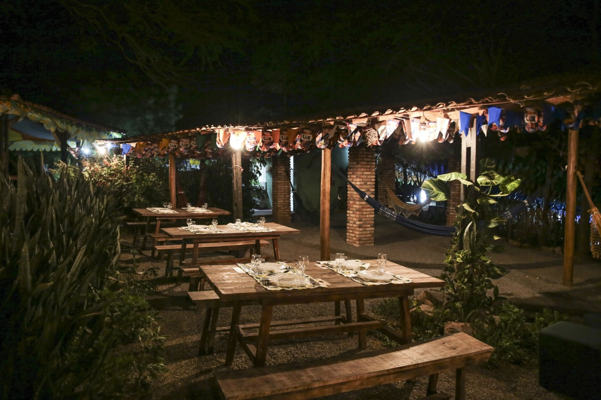
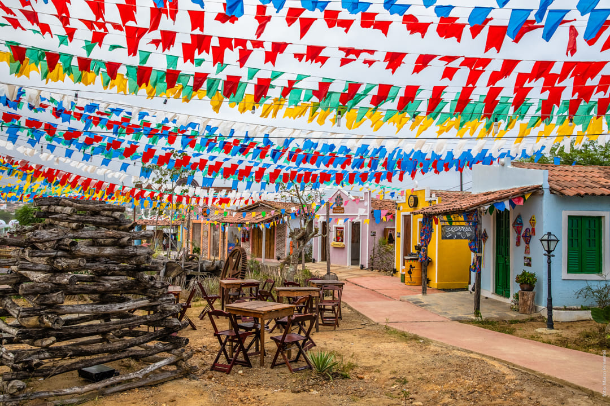
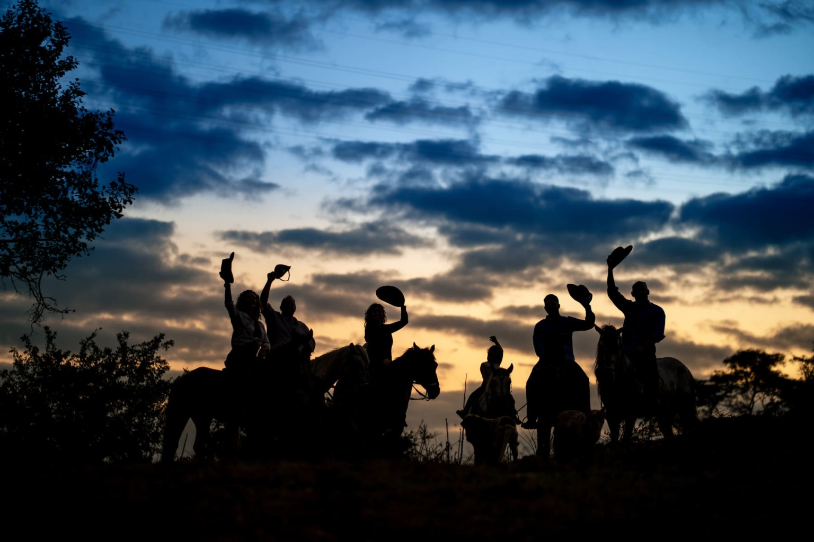

Estava em Campina e fiquei encantado com a energia vibrante e a riqueza cultural da cidade. 🎉🌆 O "Maior São João do Mundo" é uma experiência inesquecível, repleta de música, dança e tradições juninas. 🎶🔥 quando caminhei pelo açude velho, senti uma paz imensa, não há palavras pra descrever o que vivi em Campina Grande .
Campina Grande, na Paraíba, é uma cidade repleta de atrações
culturais e naturais que encantam visitantes de todas as idades.
Conhecida pelo "Maior São João do Mundo", Campina Grande oferece
uma experiência única durante o mês de junho, com festas juninas
que atraem turistas de todo o Brasil. Mas a cidade vai muito além
dessa famosa festividade. O Parque do Povo é o coração das
comemorações juninas, mas também é um excelente local para
passeios em qualquer época do ano, com diversas opções de
gastronomia e artesanato.
Próximo dali, o Museu do Algodão e o Museu de Arte Assis
Chateaubriand proporcionam uma rica imersão na história e cultura
local. A Vila do Artesão é um ponto imperdível para quem aprecia o
artesanato regional. Com várias lojas que oferecem produtos
típicos, é o lugar perfeito para comprar lembranças únicas e
conhecer mais sobre o trabalho dos artesãos locais. Para os
amantes da natureza, o Parque da Criança e o Açude Velho são
paradas obrigatórias. O Açude Velho, em particular, é um
cartão-postal da cidade, onde se pode apreciar a estátua dos
Pioneiros da Borborema e uma bela vista ao entardecer. Para uma
experiência mais aventureira, a Serra do Bodopitá oferece trilhas
e uma vista deslumbrante da região. A Catedral Nossa Senhora da
Conceição, com sua arquitetura imponente, é uma visita
indispensável para os interessados em história e arquitetura.
Já o Sítio São João oferece uma viagem no tempo,
recriando o ambiente de uma antiga vila nordestina, com casas de
taipa, engenhos de cana-de-açúcar e apresentações culturais. O
Mercado Central de Campina Grande é o lugar ideal para conhecer a
culinária local, com uma variedade de frutas, verduras, queijos e
carnes que representam o melhor da produção regional. Para uma
refeição típica, os establishments da cidade oferecem pratos como
a carne de sol com nata, o rubacão e o bode guisado. No final do
dia, uma visita ao Parque da Liberdade proporciona momentos de
tranquilidade e um belo pôr do sol. Para encerrar a noite, a Praça
da Bandeira e seus arredores oferecem uma variedade de bares e
establishments, perfeitos para um jantar ao som de música ao vivo,
muitas vezes com sanfona e ritmos regionais. Campina Grande é uma
cidade que harmoniza tradição e modernidade, oferecendo atrações
para todos os gostos e tornando-se um destino irresistível para
quem deseja explorar o melhor da cultura e da natureza paraibana.
Atrações culturais em Campina Grande
Atrações naturais em Campina Grande
Garden Hotel
4.1R. Eng. José Bezerra, 400 - Mirante
“Estacionamento Coberto e seguro. Localização próximo ao centro da cidade e atrações turísticas.”
Hotel do Vale
4.0R. Cleiton Ismael, N° 10 - Lauritzen
“Atendimento, conforto e localização. Café da manhã bem servido.”

Intercity
4.3Av. Barão Rio Branco, 370 - Centro
Melhor hotel de negócios da cidade, novo, acabamento fino, quarto confortável, cama excelente, boa acústica.
Hotel Village
4.6R. Otacílio Nepomuceno, 1285 - Catolé
"O café da manhã era excelente e o quarto era muito confortável".
Hospitais (3)
-
Hospital de Emergência e Trauma Dom Luiz Gonzaga Fernandes
Endereço: Av. Mal. Floriano Peixoto, 1045 - Malvinas, Campina Grande - PB, 58428-111 TELEFONE: (83) 3310-5850 -
HELP - Hospital de Ensino e Laboratórios de Pesquisa
Endereço: R. Heronides da Costa Cirne, 250 - Serrotão, Campina Grande - PB, 58434-505 TELEFONE: (83) 3063-9960 -
Hospital Municipal Dr. Edgley Maciel
Endereço: R. Dom Bosco, S/N - José Pinheiro, Campina Grande - PB, 58407-425 TELEFONE: (83) 3342-9363
Aeroporto (1)
-
Aeroporto Presidente João Suassuna
Endereço: Av. Uberaba, S/N - Distrito Industrial, Campina Grande - PB, 58418-410 TELEFONE: (83) 3332-9000
Delegacias (9)
-
1ª DELEGACIA DISTRITAL
Endereço: R. Vig. Virgínio, 488 - Jardim Tavares, Campina Grande - PB, 58402-013 TELEFONE: (83) 3342-8635 -
2ª DELEGACIA DISTRITAL
Endereço: R. Lino Gomes da Silva, 39 - Centro, Campina Grande - PB, 58400-360 TELEFONE: (83) 3310-9343 -
3ª DELEGACIA DISTRITAL
Endereço: Av. Pres. Getúlio Vargas, 907 - Centro, Campina Grande - PB, 58400-585 TELEFONE: (83) 3342-4591 -
4ª DELEGACIA DISTRITAL
Endereço: R. Alcides Avelino de Medeiros, 549 - Serrotão, Campina Grande - PB, 58434-640 TELEFONE: (83) 3339-6906 -
6ª DELEGACIA DISTRITAL
Endereço: R. João Quirino, 476 - Catolé, Campina Grande - PB, 58410-370 TELEFONE: (83) 3337-5052 -
7ª DELEGACIA DISTRITAL
Endereço: R. Dr. Acácio Figueiredo, 1021 - Acácio Figueiredo, Campina Grande - PB, 58421-210 TELEFONE: (83) 3322-9568 -
DELEGACIA DA INFÂNCIA E JUVENTUDE
Endereço: Catolé, Campina Grande - PB, 58410-205 TELEFONE: (83) 3310-9316 -
DELEGACIA DA MULHER
Endereço: R. Raimundo Nonato de Araújo, 485-629 - Catolé, Campina Grande - PB, 58407-530 TELEFONE: (83) 3310-9300 -
DELEGACIA DO IDOSO
Endereço: R. Dom Pedro I, 117 - São José, Campina Grande - PB, 58400-414 TELEFONE: (83) 3337-7337
Rodoviarias (2)
-
Terminal Rodoviário de Campina Grande
Endereço: R. Basílio Araújo - Sandra Cavalcante, Campina Grande - PB, 58410-637 TELEFONE: (83) 3337-3239 -
RODOVIÁRIA VELHA OFICIAL
Endereço: Praça Lauritzen, 07 - Centro, Campina Grande - PB, 58400-140
UPAs (2)
-
UPA - Alto Branco
Endereço: Alto Branco, Campina Grande - PB TELEFONE: (83) 3341-2079 -
UPA Adhemar Dantas (Dinamérica)
Endereço: Santa Cruz, Campina Grande - PB, 58416-680 TELEFONE: (83) 3065-8187
Cidadania (3)
-
Casa da Cidadania
Endereço: R. Dr. Severino Cruz, 283 - Centro, Campina Grande - PB, 58400-248 TELEFONE: (83) 3310-9433 -
1° Cartório de Registro Civil das Pessoas Naturais
Endereço: Av. Mal. Floriano Peixoto, 813 - Centro, Campina Grande - PB, 58400-165 TELEFONE: (83) 3321-4598 -
Cartório Extra Judicial
Endereço: Av. Mal. Floriano Peixoto, 794 - Centenário, Campina Grande - PB, 58400-180 TELEFONE: (83) 3322-1243 -
1º Ofício de Registro de Imóveis e 1º Tabelionato de Protesto de Títulos e Documentos da Comarca de Campina Grande
Endereço: R. Vidal de Negreiros, 70 - Centro, Campina Grande - PB, 58400-263 TELEFONE: (83) 3088-5570 -
2º Cartório de Registro Civil
Endereço: Praça Clementino Procópio, 119 - Centro, Campina Grande - PB, 58400-292 TELEFONE: (83) 99947-7385 -
Fórum Afonso Campos
Endereço: Estacao Velha, Campina Grande - PB, 58410-052 TELEFONE: (83) 98793-7088
Não é à toa que Campina Grande é intitulada como a Rainha da Borborema. Charmosa e acolhedora, tem sua gastronomia marcante e a alegria é contagiante. Visitaremos os principais pontos da cidade onde acontece o Maior São João do Mundo. Às margens do Açude Velho, visitaremos o moderno Museu de Arte Popular da Paraíba, projetado pelo arquiteto Oscar Niemeyer e pelo monumento Farra da Bodega, uma homenagem ao Rei do Baião Luíz Gonzaga e ao Rei do Ritmo, Jackson do Pandeiro. Seguiremos passando pela antiga estação ferroviária, onde hoje funciona o museu do algodão, afinal aqui, com exclusividade, o algodão já nasce colorido. Passaremos pelo Parque do Povo, onde acontece, no mês de junho, o Maior São João do mundo! Seguiremos até a Catedral da cidade para pedir a bênção a Nossa Senhora da Conceição! Depois, uma paradinha pra forrar o bucho no Bar do Cuscuz, o restaurante mais tradicional da cidade, onde a sugestão será a famosa Carne de Sol na Nata e, claro, o cuscuz! Seguiremos para o tecnológico Museu Digital do Sesi, que tornou Campina Grande uma Cidade Criativa UNESCO em Artes Midiáticas. Lá conheceremos a história de Campina Grande desde a época da Vila Nova da Rainha e a importância do ciclo algodoeiro, de forma interativa e divertida.
Em uma noite de celebração à gastronomia nordestina, o Cumpade João  abre as portas da sua casa e nos recebe na sua aconchegante varanda com um jantar impecável com o sabor da nossa terra. Com clima de interior, o Chef Cumpade João irá preparar o jantar regado a muita cantoria e talento. Ele, em 2018 ganhou o prêmio Dólmã na categoria nacional, faz uma perfeita mistura na gastronomia contemporânea regional com pratos autorais misturando elementos do bioma da Caatinga ressignificando receitas consagradas mundialmente, regado a drinks de cachaças premiadas da Paraíba. Uma noite que une sabor, tradição e todo aconchego do interior.
Aqui é a terra do Maior São João do Mundo!! E pra que você possa ter  um gostinho do que essa festa significa pra gente, a Vila Sítio São João abre as portas pra te receber e mostrar que, na verdade, nesta terra se respira forró e tradições juninas o ano inteiro. Lá tem muito arrasta-pé, cultura, história e animação. Um lugar de resgate da cultura nordestina. Uma linda vilinha cinematográfica que retrata a vida do interior com casas de taipas, casa da farinha, engenhos, igreja, bodega, fogueira, artesanato, forró pé de serra e comida típica. Ainda vai se divertir com as apresentações das quadrilhas juninas.
Nosso destino é para um lugar de encher os olhos e o coração! Passaremos o dia na Fazenda Olho d’ água e quem abre as portas para nos receber é o premiado Chef Cumpade João, embaixador da gastronomia paraibana com participação em diversos programas de TV, autor do prato Romeu e Juliette, em homenagem à vencedora do BBB  2021. Teremos um dia de vivência na fazenda. Você terá a possibilidade de fazer uma linda cavalgada na companhia do Cumpade, contemplando a natureza, ouvindo histórias do homem no campo, o aboio sertanejo, rimas e versos, passando por riachos, vegetação nativa totalmente preservada. Um tempo livre para conhecer a simplicidade e o charme da vida rural. Poderá, ainda, fazer uma caminhada pelo riacho, observar a natureza, pescaria com anzol e tirar leite da vaca. Com energia renovada em sintonia com a natureza é hora de encher o bucho com um almoço regional, incluindo sobremesa com doce caseiro feito na própria fazenda. Tudo isso feito pelas mãos do nosso renomado Chef que embala a sua cozinha ao som de “repentes” e cantorias da nossa região. Depois do almoço, um descanso merecido nas redes à sombra das árvores. Encerraremos com um chá da tarde à beira do lago na encantadora Casa de Cumpade.